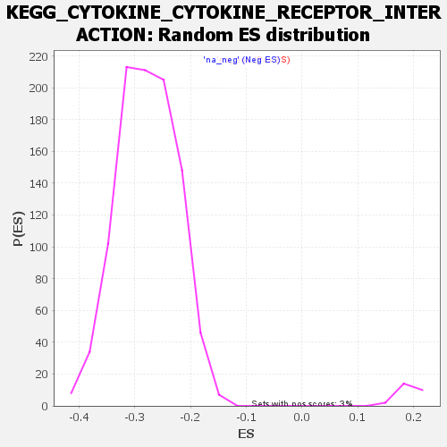

| | | Dataset | all_genes |
| Phenotype | NoPhenotypeAvailable |
| Upregulated in class | na_neg |
| GeneSet | KEGG_CYTOKINE_CYTOKINE_RECEPTOR_INTERACTION |
| Enrichment Score (ES) | -0.5461708 |
| Normalized Enrichment Score (NES) | -1.9708467 |
| Nominal p-value | 0.0 |
| FDR q-value | 0.005977264 |
| FWER p-Value | 0.009 |
Table: GSEA Results Summary
 Fig 1: Enrichment plot: KEGG_CYTOKINE_CYTOKINE_RECEPTOR_INTERACTION
Fig 1: Enrichment plot: KEGG_CYTOKINE_CYTOKINE_RECEPTOR_INTERACTION
Profile of the Running ES Score & Positions of GeneSet Members on the Rank Ordered List
| SYMBOL | RANK IN GENE LIST | RANK METRIC SCORE | RUNNING ES | CORE ENRICHMENT | | 1 | PDGFRA | 72 | 2.971 | 0.0101 | No |
| 2 | TNFSF10 | 186 | 2.456 | 0.0152 | No |
| 3 | INHBB | 590 | 1.795 | -0.0006 | No |
| 4 | CXCL16 | 626 | 1.764 | 0.0059 | No |
| 5 | CCL2 | 1284 | 1.413 | -0.0273 | No |
| 6 | ACVR1B | 1575 | 1.297 | -0.0386 | No |
| 7 | PDGFA | 1601 | 1.287 | -0.0339 | No |
| 8 | INHBA | 1862 | 1.195 | -0.0439 | No |
| 9 | ACVR1 | 1976 | 1.158 | -0.0451 | No |
| 10 | IL17RB | 2375 | 1.036 | -0.0643 | No |
| 11 | CXCR4 | 2411 | 1.029 | -0.0615 | No |
| 12 | EDA2R | 2453 | 1.016 | -0.0590 | No |
| 13 | BMPR1B | 2492 | 1.007 | -0.0564 | No |
| 14 | BMPR2 | 2528 | 0.998 | -0.0536 | No |
| 15 | IL13RA1 | 2735 | 0.947 | -0.0616 | No |
| 16 | IFNAR1 | 2748 | 0.945 | -0.0577 | No |
| 17 | IFNAR2 | 2756 | 0.942 | -0.0535 | No |
| 18 | TNFRSF13C | 3342 | 0.812 | -0.0852 | No |
| 19 | TNFRSF10C | 3369 | 0.808 | -0.0829 | No |
| 20 | TNFRSF19 | 3392 | 0.804 | -0.0803 | No |
| 21 | BMPR1A | 3445 | 0.792 | -0.0796 | No |
| 22 | IL1RAP | 3978 | 0.684 | -0.1087 | No |
| 23 | IFNGR2 | 4217 | 0.639 | -0.1201 | No |
| 24 | ACVR2A | 4412 | 0.605 | -0.1290 | No |
| 25 | TNFSF13B | 4768 | 0.540 | -0.1480 | No |
| 26 | KITLG | 5038 | 0.496 | -0.1620 | No |
| 27 | FAS | 5169 | 0.474 | -0.1676 | No |
| 28 | LEPR | 5284 | 0.451 | -0.1723 | No |
| 29 | EGFR | 5398 | 0.427 | -0.1771 | No |
| 30 | TGFB2 | 5527 | 0.404 | -0.1830 | No |
| 31 | TNFRSF11B | 5562 | 0.399 | -0.1831 | No |
| 32 | IFNGR1 | 5821 | 0.351 | -0.1971 | No |
| 33 | GHR | 6002 | 0.319 | -0.2065 | No |
| 34 | BMP7 | 6190 | 0.282 | -0.2166 | No |
| 35 | ACVR2B | 6560 | 0.217 | -0.2380 | No |
| 36 | PDGFC | 7014 | 0.143 | -0.2649 | No |
| 37 | CSF1R | 7025 | 0.141 | -0.2649 | No |
| 38 | CXCL11 | 7124 | 0.124 | -0.2702 | No |
| 39 | TGFB3 | 7249 | 0.100 | -0.2773 | No |
| 40 | PRLR | 7294 | 0.093 | -0.2795 | No |
| 41 | LTBR | 7459 | 0.066 | -0.2892 | No |
| 42 | CX3CL1 | 7798 | -0.003 | -0.3098 | No |
| 43 | EGF | 8176 | -0.070 | -0.3325 | No |
| 44 | PLEKHO2 | 8206 | -0.076 | -0.3339 | No |
| 45 | TGFBR1 | 8259 | -0.085 | -0.3366 | No |
| 46 | TNFRSF10B | 8462 | -0.122 | -0.3484 | No |
| 47 | IL6ST | 8961 | -0.217 | -0.3777 | No |
| 48 | OSMR | 8997 | -0.225 | -0.3787 | No |
| 49 | TGFB1 | 9080 | -0.241 | -0.3825 | No |
| 50 | TNFRSF21 | 9122 | -0.252 | -0.3838 | No |
| 51 | CCR1 | 9193 | -0.266 | -0.3868 | No |
| 52 | TNFSF13 | 9198 | -0.268 | -0.3857 | No |
| 53 | IL20RB | 9629 | -0.356 | -0.4102 | No |
| 54 | IL12A | 9753 | -0.385 | -0.4158 | No |
| 55 | IL10RB | 9759 | -0.386 | -0.4142 | No |
| 56 | CNTF | 10179 | -0.482 | -0.4374 | No |
| 57 | CCL25 | 10201 | -0.487 | -0.4363 | No |
| 58 | LIFR | 10285 | -0.509 | -0.4389 | No |
| 59 | VEGFD | 10364 | -0.525 | -0.4411 | No |
| 60 | VEGFA | 10669 | -0.599 | -0.4567 | No |
| 61 | EDA | 10722 | -0.611 | -0.4569 | No |
| 62 | IL18R1 | 10902 | -0.656 | -0.4646 | No |
| 63 | TNFRSF12A | 10959 | -0.668 | -0.4648 | No |
| 64 | TNFRSF1A | 11579 | -0.827 | -0.4985 | No |
| 65 | IL1R2 | 11643 | -0.843 | -0.4982 | No |
| 66 | IL11 | 11819 | -0.889 | -0.5046 | No |
| 67 | CXCL14 | 11911 | -0.912 | -0.5056 | No |
| 68 | TNFSF4 | 12244 | -1.016 | -0.5209 | No |
| 69 | CXCL2 | 12265 | -1.021 | -0.5172 | No |
| 70 | CNTFR | 12270 | -1.023 | -0.5124 | No |
| 71 | CXCL10 | 12488 | -1.096 | -0.5203 | No |
| 72 | MET | 12847 | -1.221 | -0.5362 | No |
| 73 | INHBE | 13012 | -1.279 | -0.5399 | Yes |
| 74 | CTF1 | 13026 | -1.284 | -0.5344 | Yes |
| 75 | ACVRL1 | 13068 | -1.301 | -0.5306 | Yes |
| 76 | IL17RA | 13207 | -1.355 | -0.5324 | Yes |
| 77 | TNFRSF6B | 13228 | -1.362 | -0.5270 | Yes |
| 78 | PDGFRB | 13344 | -1.402 | -0.5271 | Yes |
| 79 | NGFR | 13509 | -1.460 | -0.5300 | Yes |
| 80 | IL21R | 13551 | -1.480 | -0.5253 | Yes |
| 81 | VEGFC | 13561 | -1.483 | -0.5186 | Yes |
| 82 | IL7 | 13590 | -1.499 | -0.5130 | Yes |
| 83 | BMP2 | 13697 | -1.545 | -0.5119 | Yes |
| 84 | RELT | 13714 | -1.554 | -0.5053 | Yes |
| 85 | CCL5 | 13737 | -1.563 | -0.4990 | Yes |
| 86 | TGFBR2 | 13750 | -1.568 | -0.4920 | Yes |
| 87 | TNFRSF14 | 13805 | -1.594 | -0.4875 | Yes |
| 88 | CCR10 | 13909 | -1.631 | -0.4859 | Yes |
| 89 | IL20RA | 13960 | -1.648 | -0.4809 | Yes |
| 90 | TSLP | 13965 | -1.650 | -0.4730 | Yes |
| 91 | TNFRSF10A | 14015 | -1.676 | -0.4678 | Yes |
| 92 | TNFSF12 | 14080 | -1.712 | -0.4634 | Yes |
| 93 | IL1A | 14176 | -1.758 | -0.4606 | Yes |
| 94 | CXCL3 | 14197 | -1.771 | -0.4532 | Yes |
| 95 | EPOR | 14202 | -1.773 | -0.4447 | Yes |
| 96 | IL12RB1 | 14219 | -1.779 | -0.4370 | Yes |
| 97 | IL1B | 14484 | -1.895 | -0.4439 | Yes |
| 98 | IL22RA1 | 14721 | -2.020 | -0.4484 | Yes |
| 99 | CXCL12 | 14752 | -2.038 | -0.4403 | Yes |
| 100 | FLT1 | 14799 | -2.065 | -0.4330 | Yes |
| 101 | IL18 | 14810 | -2.075 | -0.4235 | Yes |
| 102 | IL7R | 14870 | -2.116 | -0.4167 | Yes |
| 103 | FLT3LG | 14878 | -2.120 | -0.4068 | Yes |
| 104 | HGF | 14893 | -2.129 | -0.3972 | Yes |
| 105 | IFNE | 14918 | -2.147 | -0.3882 | Yes |
| 106 | CLCF1 | 14989 | -2.189 | -0.3818 | Yes |
| 107 | IL11RA | 15008 | -2.197 | -0.3722 | Yes |
| 108 | VEGFB | 15014 | -2.203 | -0.3617 | Yes |
| 109 | TNFSF18 | 15053 | -2.230 | -0.3531 | Yes |
| 110 | CSF1 | 15082 | -2.254 | -0.3438 | Yes |
| 111 | TNFSF15 | 15224 | -2.359 | -0.3409 | Yes |
| 112 | CCL22 | 15235 | -2.369 | -0.3299 | Yes |
| 113 | IL4R | 15289 | -2.412 | -0.3214 | Yes |
| 114 | IFNLR1 | 15348 | -2.456 | -0.3129 | Yes |
| 115 | CSF2RA | 15478 | -2.550 | -0.3083 | Yes |
| 116 | IL10RA | 15551 | -2.615 | -0.3000 | Yes |
| 117 | CCL26 | 15644 | -2.689 | -0.2924 | Yes |
| 118 | KDR | 15647 | -2.690 | -0.2794 | Yes |
| 119 | GDF5 | 15651 | -2.694 | -0.2664 | Yes |
| 120 | IL6R | 15674 | -2.718 | -0.2545 | Yes |
| 121 | TNFSF14 | 15718 | -2.764 | -0.2436 | Yes |
| 122 | PDGFB | 15754 | -2.807 | -0.2320 | Yes |
| 123 | CCR4 | 15774 | -2.824 | -0.2194 | Yes |
| 124 | LTA | 15840 | -2.889 | -0.2093 | Yes |
| 125 | IL12RB2 | 15847 | -2.893 | -0.1955 | Yes |
| 126 | IL15RA | 15880 | -2.929 | -0.1831 | Yes |
| 127 | TNFRSF18 | 15922 | -2.977 | -0.1711 | Yes |
| 128 | CXCL8 | 15951 | -3.024 | -0.1580 | Yes |
| 129 | CCL24 | 15955 | -3.031 | -0.1434 | Yes |
| 130 | IL15 | 16012 | -3.134 | -0.1315 | Yes |
| 131 | TNFSF9 | 16026 | -3.158 | -0.1169 | Yes |
| 132 | TNFRSF9 | 16139 | -3.399 | -0.1071 | Yes |
| 133 | TNFRSF25 | 16180 | -3.492 | -0.0925 | Yes |
| 134 | AMH | 16184 | -3.506 | -0.0756 | Yes |
| 135 | LIF | 16187 | -3.513 | -0.0585 | Yes |
| 136 | CD70 | 16239 | -3.671 | -0.0437 | Yes |
| 137 | IL1R1 | 16242 | -3.684 | -0.0258 | Yes |
| 138 | TNFRSF10D | 16386 | -4.176 | -0.0141 | Yes |
| 139 | TNFRSF1B | 16486 | -4.719 | 0.0029 | Yes |
Table: GSEA details [plain text format]

Fig 2: KEGG_CYTOKINE_CYTOKINE_RECEPTOR_INTERACTION: Random ES distribution
Gene set null distribution of ES for KEGG_CYTOKINE_CYTOKINE_RECEPTOR_INTERACTION